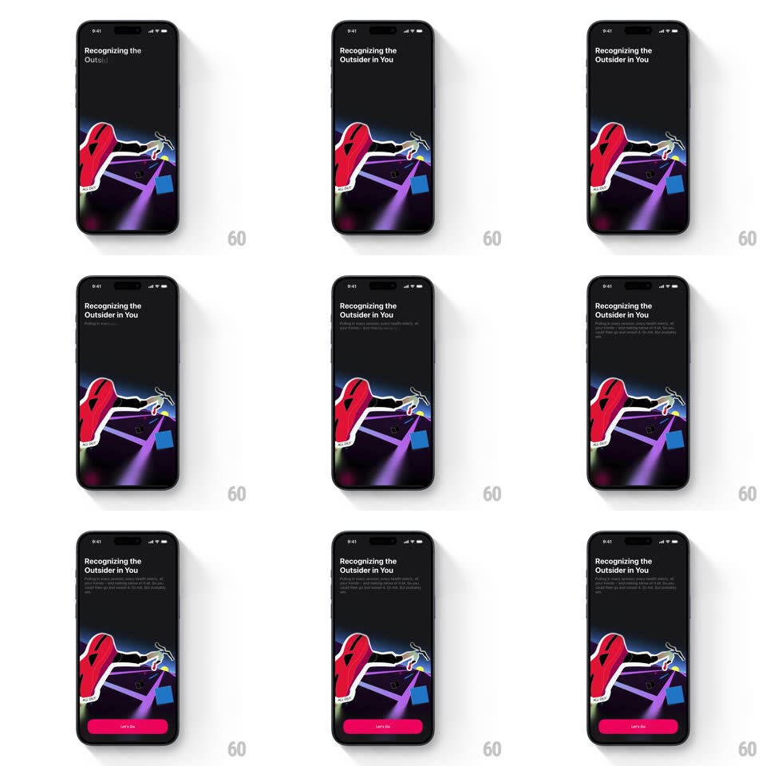

Media
Frame-by-frame

Rebuild this animation 1:1: The Outsiders' get-started intro - "Recognizing the Outsider in You" blurs in word by word over a dark runner illustration, body copy follows, and a pink "Let's Go" button fades in at the bottom.

Rebuild this animation 1:1: The Outsiders' get-started intro - "Recognizing the Outsider in You" blurs in word by word over a dark runner illustration, body copy follows, and a pink "Let's Go" button fades in at the bottom. ## Integration Integration: stack-agnostic spec - springs given as stiffness/damping, timed motions as duration + curve; map every value to your framework and animation library of choice. ## Scene Black screen: a top-aligned headline "Recognizing the Outsider in You", a small subline below it, and a large illustration of a red-jacketed runner mid-stride over purple light streaks. A pink "Let's Go" button sits at the bottom. ## Motion spec Pattern: staggered blur-in text reveal, ~1.4s. - Headline: each word resolves from blur(8px) + 40% opacity to sharp, 120ms stagger, 300ms per word. - Illustration: rises 24px while fading in (500ms, ease-out), starting with the first word. - Subline: fades in (300ms) after the headline lands, +100ms. - Button: fades in from 0 with a 10px rise (350ms), last in the sequence (+200ms after subline). ## Calibration - The illustration enters as one piece - only the text staggers. - The button is static pink; no shimmer or scale. ## Reduced motion Everything fades in together (400ms), no blur, no stagger. ## Don't miss - The blur resolves per word left to right - a whole-line fade loses the signature. - The illustration's purple light streaks are part of the artwork, not animated effects.